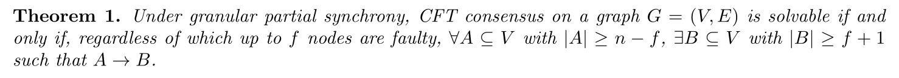
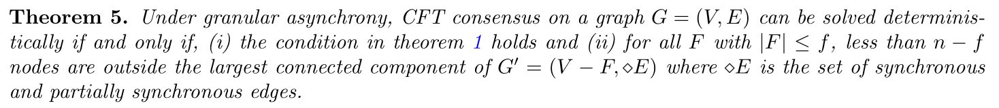
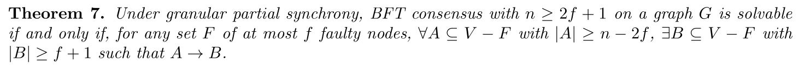
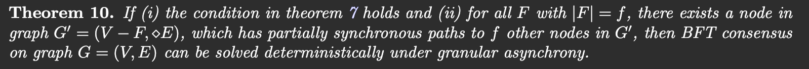

Granular Synchrony
Paper: [1]
- They say that the protocols are graph agnostic. The system has no knowledge about the synchronicity properties of the edges.
- Node \(a\) has a synchronous path to node \(b\), written as \(a\rightarrow b\), if there exist a sequence of synchronous edges \((a,i_i)\), \((i_1,i_2)\), \(\ldots\), \(i_k,b\) where every intermediate node \(i_j\) is correct.
- \(A\rightarrow B\) if \(\forall b \in B\), \(\exists a \in A\) such that \(a\rightarrow b\).
Main Results
- Theorem 1. Under granular partial synchrony, CFT consensus on a graph \(G = (V, E)\) is solvable if and only if, regardless of which up to \(f\) nodes are faulty, \(\forall A \subseteq V\) with \(|A| \ge n-f\), \(\exists B \subseteq V\) with \(|B| \ge f+1\) such that \(A \rightarrow B\).

Theorem 5. Under granular asynchrony, CFT consensus on a graph \(G = (V, E)\) can be solved deterministically if and only if,
- the condition in theorem 1 holds and
- for all \(F\) with \(|F| \le f\) , less than \(n−f\) nodes are outside the largest connected component of \(G'= (V−F, \diamond E)\) where \(\diamond E\) is the set of synchronous and partially synchronous edges.

- Theorem 7. Under granular partial synchrony, BFT consensus with \(n \ge 2f + 1\) on a graph \(G\) is solvable if and only if, for any set \(F\) of at most \(f\) faulty nodes, \(\forall A\subseteq V-F\) with \(|A|\ge n−2f\), \(\exists B \subseteq V−F\) with \(|B| \ge f + 1\) such that \(A \rightarrow B\).

- Theorem 10. If (i) the condition in Theorem 7 holds and (ii) for all \(F\) with \(|F|=f\), there exists a node in graph \(G'=(V-F, \diamond E)\), which has partially synchronous paths to \(f\) other nodes in \(G'\), then BFT consensus on graph \(G=(V,E)\) can be solved deterministically under granular asynchrony.

Summary
| Fault | Graph | Results |
|---|---|---|
| Crash | Granular Partial Synchrony (Sync + PSync) | \(f+1 \le n \le 2f+1\) |
| Byzantine | Granular Partial Synchrony (Sync + PSync) | |
| Crash | Granular Asynchrony (Sync + PSync + Async.) | |
| Byzantine | Granular Asynchrony (Sync + PSync + Async.) |
References
[1] Neil Giridharan, Ittai Abraham, Natacha Crooks, Kartik Nayak, and Ling Ren. 2024. “Granular Synchrony.” http://arxiv.org/abs/2408.12853.